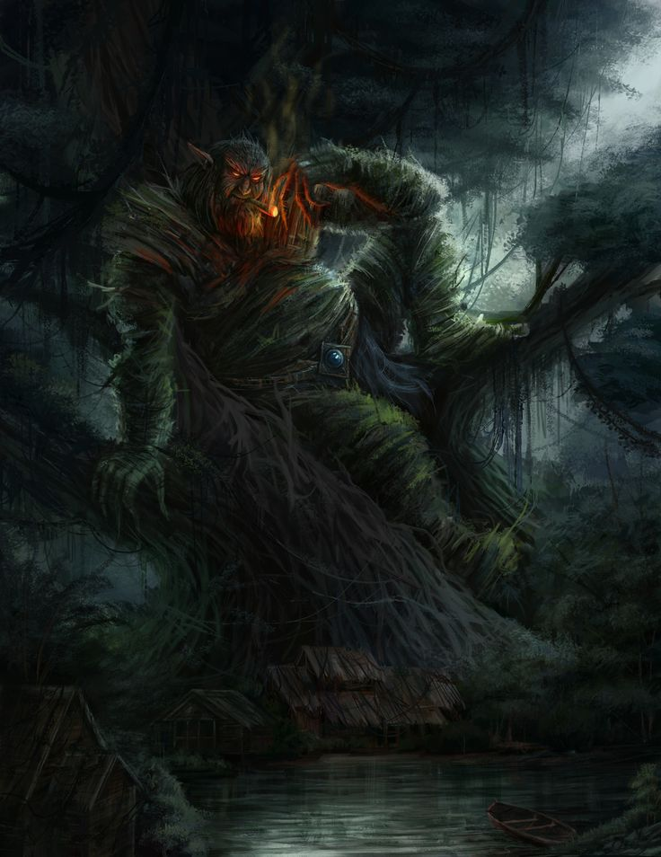

Over time, Nina learned that the Kapre was not a creature of malice, but a watcher. He showed her secret paths in the forest, where wild berries grew and hidden springs sparkled. She discovered the rhythm of the woods — the heartbeat of trees, the whispers of leaves, and the language of shadows.
Kapre protected her from dangers like Tikbalangs and lurking Aswangs. His massive form became a shield, his glowing eyes a guide. And in return, Nina offered him friendship, laughter, and the understanding that humans could be allies, not intruders.